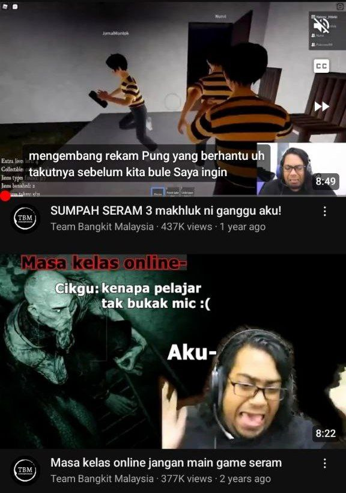

ABOUT ME
Hi! My name is Najihah Mumtazah binti Mohd Khaidir and I was born on the 1st of September, 2003.
I currently studying in UiTM, Rembau, and I am taking a Diploma in Information Management. This
photo shows me receiving the dean's award for the first time, which I achieved after completing
this study for four semesters. What I'm still proud of is that, despite not receiving the dean's
award for three semesters, I was still able to obtain a 3.0 or higher
point average.
MY FAVS <3
These are my favorite animals. I really like cats but i do not have the courage to approach all cats. I truly adore clingy cats, but am afraid of aggressive ones.I only venture to approach the cats if they come to me first.
MY HOBBY

I loves watching youtube streamer when i get bored. My favorite streamer is Pokro and
he is the first streamer i have ever known since 2021 and since then, i never stop
watching him because he can comfort me with his videos and live.
I started to know the second streamer, Team Bangkit Malaysia, also known as Hatoro, because
of Pokro. I love the way he comfort people and the way he talk to viewers because he is
very softspoken and also funny.
The third one is one and only princess in their group which is known as Kambing or Nuyul.
She is cute and she loves to tease her teammates since they also like to bully her.
The last one is also one of my favorite streamer other than Pokro. People know him as
RyanSM. Ryan is also quite soft and he notices every of his viewers. he even make viewers
like his friends and not just viewers. He is also talented in singing and we loves to
enjoy to his singing.
These streamers have created their own group's name which is Horror Squad. I like to join
their streams everytime they go live and play horror games together. I usually watch the
live through Pokro's streams because he is the one that most comfortable for me to watch.